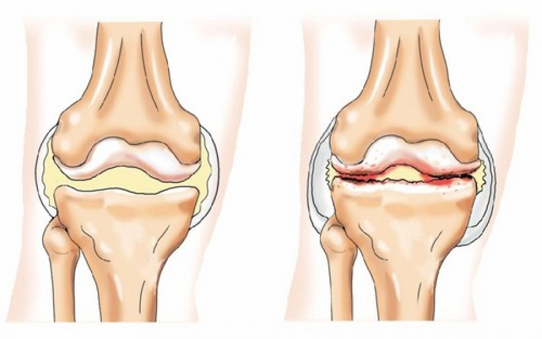

MEDICINA• INSTRUCCIÓN
ПОСЛЕДНИЕ НОВОСТИ
Самый старый португальский ревматолог Мигель Рабеллино вышел на
пенсию в возрасте 70 лет, хотя он был еще молод душой и телом.

|
Даниэль Мартинес |

Он ушел на пенсию 39 лет назад и чиновники социального обеспечения ненавидят его .
Сейчас академику 109 лет, а ведет такую же активную жизнь как и в 60!
Доктор Рабеллино уверяет, что секрет долголетия основан на здоровых суставах и
позвоночнике.
Движение — одно из величайших природных даров, заботливо преподнесённых
человеку.Если вы ведете активный образ жизни то, вы можете прожить до 120 лет и даже дольше и
чувствовать себя полностью здоровыми. Ревматолог полностью подтвердил это утверждение.
Нашему репортеру удалось взять интервью у доктора Рабеллино, который рассказал нам
свой секрет здоровых суставов на долгие года.
- Господин Рабеллино, вы несколько раз заверяли, что здоровые суставы - основа здоровья. Почему?
- Очень просто. Ещё мудрецы в древние времена говорили о том, что пока здоров позвоночник,
здоров и сам человек.
К сожалению, современный человек подвержен многочисленным испытаниям, которые не самым лучшим образом сказываются на здоровье опорно-двигательного аппарата: загрязненный воздух, малоподвижный образ жизни, чрезмерные нагрузки, неправильное питание, лишний вес и отсутствие витаминов – это только часть факторов, которые могут привести к проблемам с позвоночником и суставами.
Позвоночник – это опора человека, а суставы – своеобразный механизм, для приведения тела в движение. Именно поэтому позвоночник и суставы называются опорно-двигательным аппаратом.
К сожалению, в течение жизни люди мало внимания уделяют состоянию своего позвоночника и суставов, что приводит к разнообразным проблемам и заболеваниям, и уже к 50 годам многие испытывают постоянные боли в суставах и позвоночнике. Человеческое тело стареет.
Если вы будете осторожны и будете заботится о своих суставах , у вас будет возможность прожить не менее 20 лет, не страдая от боли, и ваше тело будет отлично функционировать. Другими словами, здоровые суставы могут продлить вам жизнь и здоровье. И это не просто теория. Я рекомендовал свой метод своим пациентам и лично применяю его на практике. Все, кто прислушались к моему совету, живут лучше, чем многие люди их возраста.
К сожалению, современный человек подвержен многочисленным испытаниям, которые не самым лучшим образом сказываются на здоровье опорно-двигательного аппарата: загрязненный воздух, малоподвижный образ жизни, чрезмерные нагрузки, неправильное питание, лишний вес и отсутствие витаминов – это только часть факторов, которые могут привести к проблемам с позвоночником и суставами.
Позвоночник – это опора человека, а суставы – своеобразный механизм, для приведения тела в движение. Именно поэтому позвоночник и суставы называются опорно-двигательным аппаратом.
К сожалению, в течение жизни люди мало внимания уделяют состоянию своего позвоночника и суставов, что приводит к разнообразным проблемам и заболеваниям, и уже к 50 годам многие испытывают постоянные боли в суставах и позвоночнике. Человеческое тело стареет.
Если вы будете осторожны и будете заботится о своих суставах , у вас будет возможность прожить не менее 20 лет, не страдая от боли, и ваше тело будет отлично функционировать. Другими словами, здоровые суставы могут продлить вам жизнь и здоровье. И это не просто теория. Я рекомендовал свой метод своим пациентам и лично применяю его на практике. Все, кто прислушались к моему совету, живут лучше, чем многие люди их возраста.

Так выглядит здоровой
и больной сустав. С возрастом хрящевая ткань сустава разрушается, деформируется и истончается.
Это может сказаться на вашем здоровье, привести к болям, а может быть, этот процесс ухудшения
уже начался.
-Что может навредить суставам?
- Для того, что бы понять что может навредить нашим суставам, надо понять как они устроены.
Суставы состоят из суставной капсулы, хряща, синовиальной жидкости и связок.
Возраст.
С возрастом снижается выработка синовиальной жидкости — в суставах появляется
хруст, их движения могут вызывать боль. Это происходит, потому что хрящи, приближаясь друг к
другу, стираются, появляются микротравмы.
Артрит.
Артриты появляются в результате инфекций, травм, обменных нарушений. Симптомы артрита:
нарастающая боль в суставах из-за того, что суставные поверхности и хрящи травмируются друг о
друга. Если запустить воспалительный артрит, он перейдет в хроническое состояние — артроз.
Артроз.
Артроз — это деформация сустава, которая снижает объем движения из-за серьезного нарушения
обмена веществ в суставе. Он возникает при хроническом перенапряжении суставного хряща, а также
при прогрессировании артрита.

Эти фотографии показывают дегенеративные изменения суставов и насколько они могут ухудшить
качество жизни.
53-летний мужчина, гонартроз коленного сустава.Уменьшение толщины хрящевой ткани,
что приводит к травматизации костных структур, а это приводит к инвалидности ВО ВСЕХ СЛУЧАЯХ и
эти пациенты требуют особого внимания.
Остеоартроз кистей рук. Это заболевание доставляет множество проблем в
профессиональной, а также повседневной жизни. Больному становится сложно совершать привычные
действия с мелкими предметами, например, писать, шить, завязывать шнурки, печатать на
клавиатуре.
На национальном уровне это серьезная ситуация. Особую актуальность заболевания суставов
приобретают в связи с увеличением продолжительности жизни: согласно исследованиям, патология
суставов у лиц старше 40 лет обнаруживается в 50% случаев, а после 70 лет — у 90% населения.
Врачи осведомлены о проблеме и понимают, что если вовремя не предпринять необходимые меры,
болевой синдром превращается для человека в ежедневное испытание, когда даже самые простые
движения даются с трудом, а об активном образе жизни остается только вспоминать, но для
португальской медицины это не является приоритетом. Врачи прописывают лекарства от боли, которые
временно снимают болевой синдром, но не лечат. Но есть метод, он использовался более 50 лет в
США и Азии, при котором активируются процессы заживления и регенерации пораженных тканей.
-Есть ли какие-либо симптомы, свидетельствующие о проблемах с суставами?
- Есть конечно. Основные симптомы:
- Резкая боль — в состоянии движения или покоя
- Отек в области больного сустава — постоянный или возникающий периодически
- Покраснение и повышенная температура пораженной области
- Скованность движений в утренние часы
- Неподвижность сустава после сна или длительного отдыха
- Хруст, скрежет и щелчки, которые сопровождаются глухим звуком
- Болью при движении и нагрузке
Независимо от того, есть ли у вас один из этих симптомов, после 40 лет вам необходимо заботится
о здоровье своих суставов.Таким образом, вы будете наслаждаться жизнью без боли еще долгие
десятилетия.
Человеческие суставы отлично справляются со своей задачей на протяжении всей жизни человека.
Когда они двигаются, на них ложится самая большая нагрузка. Ходьба, бег трусцой, спорт и
физическая активность подвергают суставы износу, что со временем ограничивает человеческую
активность. Чтобы суставы правильно функционировали всю жизнь, следует соблюдать особую диету и
укреплять их извне.
- Расскажите, пожалуйста, свой секрет здоровья суставов.
До недавнего времени процесс оздоровления суставов занимал у меня несколько месяцев. Я собирал
лекарственные травы, искал их на рынке или заказывал в Интернете и делал из них настойки и
компрессы. Теперь мне больше не нужно этого делать, так как мои коллеги из Института
травматологии и ортопедии придумали хороший и дешевый продукт для лечения и здоровья суставов
:FortuFlex. Фактически, этот продукт приостанавливает развитие дегенеративных изменений
опорно-двигательного аппарата , восстанавливает и обновляет суставы и позвоночник. Поэтому он
отлично подходит для наших целей.
FortuFlex быстро боливой синдром и воспаление, а при регулярном использовании усиливает
кровообращение и питание сустава, восстанавливает хрящ, защищает от его от износа.
Этот продукт не содержит искусственных ингредиентов, только натуральные экстракты растений
стимулирующие восстановление хрящевой ткани. Вот почему это так полезно.
Большинство пациентов продолжают спрашивать у меня совета о здоровье
опорно-двигательной системы. В последнее время рекомендую им только этот продукт. Это очень
эффективно.
Вот результаты исследований:
- 100% Боли прошли полностью, в том числе хронические.
- 100% Снятие отеков и воспалений в суставах.
- 93% Восстановление хрящевой ткани до нормальных значений.
- 92% Повышении выработки синовиальной жидкости.
- 89% Избавление от артрита и артроза.
- 100% Отсутствие побочных эффектов.
- Сколько стоит FortuFlex и где его купить?
Вы знаете, что пенсия не позволяет покупать дорогие лекарства, и я не могу рекомендовать что-то
подобное. FortuFlex стоит недорого, и предложение доступно на данный момент - ДО
- Это основной продукт компании для снятия болевого синдрома, воспаления, а также восстановления
и обновления суставов и позвоночника. Каждый желающий может купить FortuFlex со
скидкой 50%.
Подробнее о том, как получить FortuFlex с доставкой по всей
стране
Чтобы заказать FortuFlex, вам необходимо:
- Заполните форму на официальном сайте .
- Менеджер свяжется с вами для подтверждения адреса доставки.
- Через 1-3 дня (срок доставки), Вы получите FortuFlex курьером Важно! Из-за большого количества запросов мы вынуждены ограничить продолжительность этой кампании. Текущий этап продлится до 05.03.2021 включительно. До конца акции все желающие могут заказать оригинальный продукт FortuFlex через официальный сайт со скидкой 50%.
Для поддержания здоровья суставов и позвоночника рекомендую повторять процедуру каждые 1-2 года. Особенно в случае с пожилыми людьми. Поможет укрепить суставы и отсрочить появление признаков старения. Здоровые суставы - залог здоровья.
- Господин Рабеллино, спасибо, что раскрыли нам такие важные детали в этом интервью.
За кадром г-н Рабеллино признался нам, что любит заниматься садоводством и помогать своим детям, которые сейчас достигли пенсионного возраста. Его жена тоже долгожитель, ей 99 лет. Они оба проводят лечение, чтобы укреплять суставы и вести активный образ жизни. Профессор считает, что это единственное, что им помогает.

КОММЕНТАРИИ